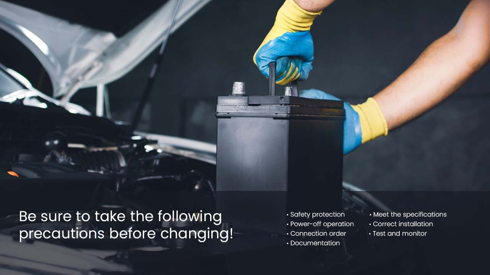

With the wide application of UPS, many families are also equipped with UPS, but due to irregular use and improper maintenance, the battery cannot meet the backup time requirements after a few years of use, and the host screen is black. It does not turn on, thinking that the UPS is damaged.
Most of them are caused by battery aging. At this time, we only need to replace the battery and do it ourselves.
Be sure to take the following precautions before changing;
- Safety protection: Before replacing the UPS battery, make sure that the necessary safety measures have been taken. This includes wearing insulated gloves and goggles, disconnecting the power supply and confirming that the equipment is powered off.
- Meet the specifications: Select the battery that meets the UPS manufacturer's specifications. UPS batteries have different sizes, voltages and capacities to ensure that a replacement that matches the original battery is selected.
- Power-off operation: First turn off the UPS device, unplug the power plug, and wait for a period of time for the UPS system to completely power off. This can avoid the risk of electric shock when touching electrical components.

- Correct installation: Follow the correct steps to install a new battery according to the UPS manufacturer's guidelines. It is usually necessary to open the UPS device housing, find the battery area, remove the old battery, and then insert the new battery.
- Connection order: Pay attention to the correct connection order when replacing the battery. According to the UPS manufacturer's manual, connect the new battery according to the correct polarity and connection method to ensure a safe and correct electrical connection.
- Test and monitor: After the battery replacement is completed, close the housing of the UPS device and reconnect the power supply. Next, carry out necessary testing and monitoring to ensure the normal operation of the new battery. This can include checking the battery charging status and system reporting.
- Documentation: Maintain and update the record of UPS battery replacement. Record the date, model, capacity and other relevant information of the battery replacement. This helps to track battery life and predict the time of the next replacement.
Conclusion
While UPS batteries commonly wear out over time, replacing them yourself is a straightforward process. To ensure a safe and successful replacement, remember these key points in one concise paragraph:
Prioritize safety by wearing insulated gloves and goggles before powering off the UPS by disconnecting the power plug. Choose a compatible replacement battery matching the original specifications, then follow the manufacturer's guide for installation, paying attention to the connection order. After installation, test and monitor the new battery's functionality, and document the replacement date and details for future reference.